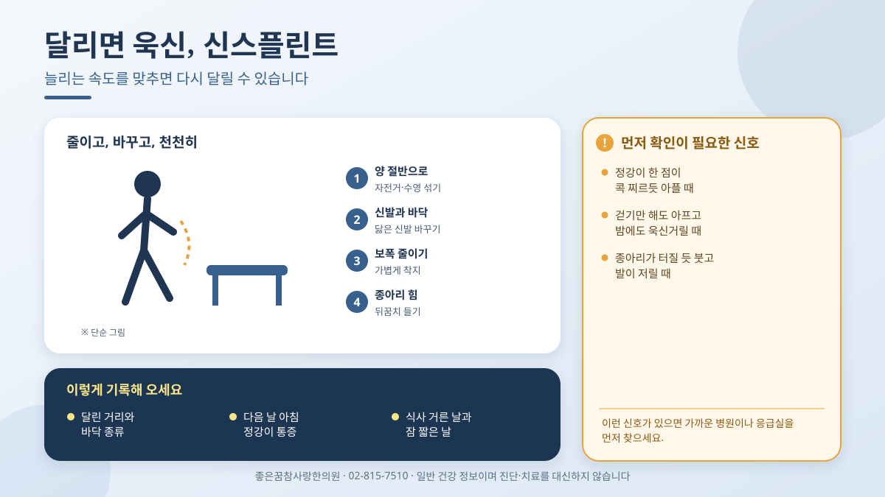

이종호 한의사 감수좋은꿈참사랑한의원 대표원장 (한의사 면허번호 19769)발행 2026-11-26 · 수정 2026-11-26
이 글의 차례
봄이 되어 동네 공원을 달리기 시작했습니다. 처음 2주는 상쾌했는데, 거리를 조금씩 늘리던 어느 날부터 달리기 시작하면 정강이 안쪽이 욱신거립니다. 몸이 풀리면 조금 덜해지는 듯하다가, 달리기를 마치고 나면 다시 시큰하고, 다음 날 아침 계단을 내려갈 때도 신경이 쓰입니다.
이런 정강이 통증은 달리기를 새로 시작했거나 갑자기 늘린 분들에게 아주 흔합니다. 군대 훈련을 시작한 분, 체력 시험을 준비하는 분, 줄넘기나 점프 운동을 시작한 분, 딱딱한 바닥에서 오래 걷거나 뛰는 일을 하는 분들도 같은 이야기를 하십니다.
진료실에서 저는 정강이를 만져 보기 전에 최근 몇 주 동안 운동이 어떻게 바뀌었는지부터 여쭙니다. 거리, 횟수, 속도, 신발, 달리는 바닥이요. 대부분 이 가운데 하나 이상이 짧은 기간에 크게 바뀌어 있습니다.
정강이 통증은 쉬면 잠시 나아졌다가 다시 달리면 돌아오는 일이 반복되기 쉽습니다. 그래서 통증을 참고 버티기보다, 왜 생겼는지 알고 운동량을 어떻게 조절할지 정하는 것이 중요합니다.
신스플린트는 어떤 상태인가요
신스플린트는 정강이 안쪽, 뼈 가장자리를 따라 길게 생기는 통증을 부르는 말입니다. 의학적으로는 정강이 안쪽 피로 증후군이라고도 합니다. 정강이뼈를 감싸는 막과 그곳에 붙는 종아리 안쪽 근육이 반복된 충격과 당김에 지쳐 예민해진 상태로 이해합니다.
통증은 보통 정강이 아래쪽 3분의 2 지점, 안쪽 뼈 가장자리를 따라 손가락 몇 마디 길이로 퍼져 있습니다. 운동을 시작할 때 아프다가 몸이 풀리면 조금 덜해지고, 운동을 마친 뒤 다시 시큰해지는 흐름이 흔합니다.
정강이 바깥쪽 근육이 아픈 경우도 있습니다. 발목을 들어 올리는 근육이 지쳐서 생기는 경우로, 내리막을 많이 걷거나 뛰는 분에게서 자주 봅니다. 자리는 다르지만 돌보는 방향은 비슷합니다.
신스플린트는 한쪽보다 양쪽 정강이에 함께 오는 경우가 많습니다. 처음에는 운동 뒤에만 시큰하다가, 그대로 운동량을 유지하면 운동 중에도, 나중에는 일상에서 걸을 때도 아픈 쪽으로 흘러갈 수 있어서 초기에 속도를 조절하는 것이 중요합니다.
왜 달리기를 늘리면 정강이가 아플까요
뼈와 그 주변 막, 근육은 운동량에 맞춰 천천히 단단해집니다. 그런데 거리나 횟수를 짧은 기간에 크게 늘리면 적응할 시간이 부족해 회복보다 피로가 더 빨리 쌓입니다. 신스플린트는 대개 이 균형이 깨질 때 생깁니다.
발의 모양과 걸음도 영향을 줍니다. 발바닥 아치가 낮아 착지할 때 발이 안쪽으로 많이 무너지는 분은 종아리 안쪽 근육이 그만큼 더 당겨집니다. 보폭이 지나치게 커서 뒤꿈치로 쿵 내려앉는 달리기 습관도 정강이에 오는 충격을 키웁니다.
닳은 운동화, 딱딱한 아스팔트나 콘크리트 바닥, 경사진 길만 달리는 습관도 부담을 더합니다. 엉덩이와 종아리 근육이 약해 착지 충격을 나눠 받지 못하는 경우에도 정강이가 먼저 지칩니다.
몸 전체의 상태도 함께 봅니다. 식사량이 부족하거나 체중을 급하게 줄이는 중이거나, 잠이 짧은 시기에는 뼈와 근육이 회복할 재료와 시간이 부족해 같은 운동에도 정강이가 더 쉽게 아플 수 있습니다.
피로골절과는 어떻게 다른가요?
신스플린트와 가장 먼저 나눠 봐야 하는 것이 정강이뼈 피로골절입니다. 둘 다 운동량을 늘린 뒤 정강이가 아프지만, 피로골절은 뼈에 미세한 금이 간 상태라 돌보는 방법이 달라집니다.
- 신스플린트: 뼈 가장자리를 따라 길게 퍼진 통증, 몸이 풀리면 조금 덜해지기도 함
- 피로골절: 한 점을 눌렀을 때 콕 찌르듯 아프고, 운동할수록 더 아파지며 걷기만 해도 아픔
- 신스플린트: 쉬는 날 아침에는 비교적 편함
- 피로골절: 밤이나 쉬고 있을 때도 욱신거리고, 한 발로 뛰기가 어려움
피로골절이 의심되면 정형외과에서 영상 검사를 받고, 뛰는 운동을 일정 기간 쉬는 것이 중요합니다. 종아리가 단단하게 부풀며 운동할 때마다 터질 듯 아프고 발이 저리다면 근육 구획의 압력이 높아지는 문제도 확인해야 합니다.
어떤 분에게 잘 생기나요
달리기를 시작한 지 몇 주 안 된 분, 오래 쉬었다가 예전 거리로 바로 돌아간 분에게 가장 흔합니다. 대회를 앞두고 훈련량을 급히 늘린 분, 체력 시험이나 입대를 앞두고 짧은 기간에 달리기를 몰아서 하는 분도 자주 겪습니다.
농구나 배구, 줄넘기처럼 점프와 착지가 많은 운동을 하는 분, 딱딱한 바닥에서 하루 종일 서서 걷는 일을 하는 분도 정강이가 쉽게 지칩니다. 발바닥 아치가 낮거나, 예전에 발목을 자주 삐어 발목이 불안한 분도 함께 살펴봅니다.
계절도 영향을 줍니다. 날이 풀리는 봄과 선선한 가을에 달리기를 시작하는 분이 많아서 이 시기에 정강이 통증 이야기를 자주 듣습니다. 추운 날에는 다리가 충분히 데워지지 않은 채 뛰기 쉬워서 준비 운동을 조금 더 길게 하시길 권합니다.
집에서 먼저 살펴볼 수 있는 것
정강이 안쪽 뼈 가장자리를 손가락으로 위에서 아래로 천천히 눌러 내려가 보세요. 아픈 범위가 손가락 몇 마디 길이로 퍼져 있는지, 한 점만 유난히 아픈지 확인합니다. 한 점만 콕 아프다면 진찰을 서두르시는 편이 좋습니다.
아프지 않은 쪽 다리로 먼저 제자리에서 가볍게 몇 번 뛰어 보고, 아픈 쪽으로도 해 보세요. 아픈 쪽으로 뛰기가 어렵거나 한 번 뛸 때마다 찌릿하다면 달리기는 잠시 멈추고 진찰을 받아 보시길 권합니다.
신발 밑창을 뒤집어 닳은 모양도 봐 두세요. 한쪽만 유난히 닳았거나 안쪽이 많이 닳았다면 착지 습관과 발 모양을 함께 살펴볼 실마리가 됩니다.
신스플린트를 두고 자주 헷갈리는 것
첫째, 몸이 풀리면 덜 아프니 계속 달려도 된다는 생각입니다. 달리는 동안 덜 아픈 것은 신스플린트의 흔한 흐름이지만, 그렇다고 피로가 쌓이지 않는 것은 아닙니다. 달리기 뒤와 다음 날 아침의 통증이 점점 커진다면 양을 줄이셔야 합니다.
둘째, 완전히 쉬어야만 한다는 생각입니다. 대부분은 뛰는 양을 줄이고 충격이 적은 운동으로 바꾸면서 체력을 유지할 수 있습니다. 수영, 실내 자전거, 걷기처럼 정강이에 충격이 적은 운동을 섞어 보세요.
셋째, 비싼 신발만 바꾸면 해결된다는 생각입니다. 닳은 신발을 바꾸는 것은 도움이 되지만, 운동량을 늘리는 속도와 착지 습관, 다리 근력이 함께 바뀌지 않으면 같은 일이 반복되기 쉽습니다.
달리기는 어떤 순서로 줄이고 다시 늘리나요
통증이 있는 동안에는 달리는 거리와 횟수를 절반 이하로 줄이거나, 일주일 정도 뛰는 운동을 쉬고 걷기와 자전거로 바꿉니다. 걸을 때도 아프다면 걷는 양도 줄이고 진찰을 먼저 받아 보세요.
걸을 때 아프지 않고, 한 발로 가볍게 뛰어도 편하다면 다시 달리기를 시작해 볼 수 있습니다. 처음에는 걷기와 달리기를 번갈아 하는 방식으로, 평평하고 너무 딱딱하지 않은 길에서 짧게 시작합니다.
그다음부터는 일주일에 거리를 조금씩 늘리되, 한 번에 크게 늘리지 않습니다. 달린 다음 날 아침 정강이가 편하다면 다음 단계로 넘어가고, 시큰함이 다시 생기면 한 단계 뒤로 돌아갑니다.
먼저 이렇게 여쭙니다
처음 오시면 대략 이런 순서로 여쭙니다. 미리 떠올려 오시면 진료가 훨씬 수월합니다.
- 언제부터, 어떤 운동을 얼마나 늘린 뒤 아프기 시작했나요?
- 아픈 자리가 길게 퍼져 있나요, 한 점이 콕 아픈가요?
- 걷기만 해도 아프거나 밤에 쉬고 있을 때도 욱신거리나요?
- 신발은 언제 바꾸셨고, 주로 어떤 바닥에서 달리시나요?
- 최근 식사량을 줄이거나 체중을 급하게 빼신 적이 있나요?
- 예전에도 정강이나 발에 피로골절이 있었던 적이 있나요?
여성분이라면 생리 주기가 불규칙해졌거나 끊긴 적이 있는지도 여쭙습니다. 운동량에 비해 식사가 부족하면 뼈가 약해져 같은 운동에도 피로골절이 생기기 쉬워서, 이 부분도 함께 살펴봅니다.
일상에서 먼저 해 볼 수 있는 것
신스플린트는 운동량을 조절하고 다리가 충격을 나눠 받을 힘을 기르는 데서 시작합니다.
- 아픈 동안 달리기 양을 줄이고 수영·자전거·걷기로 바꾸기
- 달린 뒤 정강이에 수건으로 감싼 찬 팩을 10분 정도 대기
- 닳은 운동화 바꾸고, 평평하고 덜 딱딱한 길 고르기
- 보폭을 조금 줄이고 발걸음 수를 늘리듯 가볍게 달리기
- 종아리와 발바닥을 아프지 않은 범위에서 천천히 늘이기
근력 운동도 함께 하세요. 계단 끝에 서서 뒤꿈치를 천천히 들었다 내리기, 한 발로 서서 균형 잡기, 누워서 엉덩이 들어 올리기처럼 종아리와 엉덩이를 쓰는 동작은 착지 충격을 나눠 받는 데 도움이 됩니다.
식사도 챙기세요. 운동량을 늘리는 시기에는 끼니를 거르지 말고, 우유나 두부, 멸치처럼 뼈에 필요한 재료가 든 음식과 단백질 반찬을 고르게 드시는 것이 좋습니다. 햇볕을 쬐며 걷는 시간도 뼈 건강에 보탬이 됩니다.
한의원에서 함께 살필 수 있는 경우
- 달리기 양을 줄여도 정강이 안쪽 시큰함이 몇 주째 이어지는 경우
- 쉬면 괜찮다가 다시 달리면 같은 자리가 반복해서 아픈 경우
- 정강이와 함께 종아리가 늘 단단하게 뭉쳐 있는 경우
- 다시 달리기를 늘리기 전 다리 상태를 점검하고 싶은 경우
- 체력 시험이나 훈련 일정을 앞두고 정강이 관리가 걱정되는 경우
좋은꿈참사랑한의원에서는 먼저 피로골절처럼 따로 확인이 필요한 통증이 아닌지부터 봅니다. 그다음 맥을 짚고, 정강이와 종아리, 발목, 발바닥, 무릎과 엉덩이까지 눌러 보고 움직여 보며 불편한 자리를 확인합니다.
진찰한 내용을 바탕으로 침, 온열 관리, 달리기 재개 순서 안내 가운데 지금 상태에 맞는 것을 정합니다. 쉽게 지치고 회복이 더딘 분은 잠과 식사 리듬도 함께 살핍니다. 한약을 상의할 때는 드시는 약을 확인한 뒤 신중히 정하고, 임신 중이시면 먼저 알려 주시고 산부인과와 상의해 주세요.
정형외과에서 진단이나 치료를 받고 계신다면 그 방향을 따르면서 함께 갑니다. 처방받은 약은 상의 없이 멈추지 마세요. 한의원 진료는 그 곁에서 다리의 회복과 다시 달릴 준비를 함께 살피는 쪽이라고 생각해 주시면 됩니다.
이렇게 기록해 오시면 상담이 쉬워집니다
정강이 통증은 운동량과 바로 이어져 있어서, 기록이 있으면 흐름이 훨씬 잘 보입니다. 2~3주 정도 간단히 적어 보세요.
- 달린 날, 거리와 시간, 달린 바닥(아스팔트, 트랙, 흙길 등)
- 달리기 시작할 때, 끝난 뒤, 다음 날 아침 정강이 통증(0~10점)
- 신발을 바꾼 날
- 걷기만 해도 아팠던 날이나 밤에 욱신거린 날
- 식사를 거른 날, 잠이 짧았던 날
기록을 보면 거리를 얼마나 늘렸을 때 통증이 커지는지, 어떤 바닥에서 덜 아픈지가 보입니다. 그 흐름에 맞춰 다음 주 운동량을 정하면 같은 통증이 반복되는 일을 줄일 수 있습니다.
다시 가볍게 달리기 위해
신스플린트는 다리가 '조금만 천천히 늘려 달라'고 보내는 신호에 가깝습니다. 그 신호를 무시하고 달리면 길어지고, 속도를 맞춰 주면 다시 편하게 달릴 수 있는 경우가 많습니다.
달리기는 오래 할수록 몸이 함께 단단해지는 운동입니다. 한 달에 몇 킬로미터를 달렸는지보다, 다치지 않고 몇 달을 이어 갔는지가 더 큰 자산이 됩니다. 조금 느리게 늘려 가는 것이 결국 더 멀리 가는 길이라는 말씀을 진료실에서 자주 드립니다.
이번 주에는 달리기 양을 절반으로 줄이고, 그 자리에 자전거나 수영을 넣어 보세요. 다음에 오시면 운동 기록부터 함께 펼쳐 보고, 다시 거리를 늘릴 시기를 같이 정해 보겠습니다.
이런 증상은 먼저 확인이 필요합니다
- 정강이 한 점이 콕 찌르듯 아파 걷기만 해도 아프고, 밤이나 쉴 때도 욱신거리는 경우
- 종아리가 터질 듯 단단하게 붓고 발이 저리거나 차가워지며 힘이 빠지는 경우
이런 신호가 있으면 한의원보다 가까운 병원이나 응급실을 먼저 찾으세요.
함께 읽으면 좋은 글
- 체력시험 준비로 갑자기 운동량을 늘린 뒤 무릎과 종아리가 아플 때는?
- 아침마다 내리막길로 출근하는데 정강이 앞쪽과 발목이 뻐근할 때는 어떻게 살피나요?
- 달리다 보면 무릎 바깥쪽이 찌릿한 장경인대 증후군은 왜 생기고 어떻게 살피나요?
- 족저근막염 통증에 체외충격파는 어떻게 사용하나요?
- 전신 체형 검사와 족저 검사는 무엇을 살피나요?

여쭙는 것
- 언제부터, 어떤 운동을 얼마나 늘린 뒤 아프기 시작했나요?
- 아픈 자리가 길게 퍼져 있나요, 한 점이 콕 아픈가요?
- 걷기만 해도 아프거나 밤에 쉬고 있을 때도 욱신거리나요?
생활에서 해 볼 것
- 아픈 동안 달리기 양을 줄이고 수영·자전거·걷기로 바꾸기
- 달린 뒤 정강이에 수건으로 감싼 찬 팩을 10분 정도 대기
- 닳은 운동화 바꾸고, 평평하고 덜 딱딱한 길 고르기
한의원에서 함께 살필 것
- 달리기 양을 줄여도 정강이 안쪽 시큰함이 몇 주째 이어지는 경우
- 쉬면 괜찮다가 다시 달리면 같은 자리가 반복해서 아픈 경우
- 정강이와 함께 종아리가 늘 단단하게 뭉쳐 있는 경우
먼저 확인이 필요한 신호
- 정강이 한 점이 콕 찌르듯 아파 걷기만 해도 아프고, 밤이나 쉴 때도 욱신거리는 경우
- 종아리가 터질 듯 단단하게 붓고 발이 저리거나 차가워지며 힘이 빠지는 경우
한눈에 보는 표
| 구분 | 핵심 |
|---|---|
| 여쭙는 것 | 언제부터, 어떤 운동을 얼마나 늘린 뒤 아프기 시작했나요? 아픈 자리가 길게 퍼져 있나요, 한 점이 콕 아픈가요? |
| 생활에서 해 볼 것 | 아픈 동안 달리기 양을 줄이고 수영·자전거·걷기로 바꾸기 달린 뒤 정강이에 수건으로 감싼 찬 팩을 10분 정도 대기 |
| 한의원에서 함께 살필 것 | 달리기 양을 줄여도 정강이 안쪽 시큰함이 몇 주째 이어지는 경우 쉬면 괜찮다가 다시 달리면 같은 자리가 반복해서 아픈 경우 |
| 먼저 확인이 필요한 신호 | 정강이 한 점이 콕 찌르듯 아파 걷기만 해도 아프고, 밤이나 쉴 때도 욱신거리는 경우 종아리가 터질 듯 단단하게 붓고 발이 저리거나 차가워지며 힘이 빠지는 경우 |
자주 묻는 질문
정강이가 아픈데 계속 달려도 되나요?
달리는 동안 덜 아파도 피로는 쌓일 수 있습니다. 통증이 있는 동안에는 거리와 횟수를 절반 이하로 줄이거나 자전거·수영으로 바꾸고, 걷기만 해도 아프다면 진찰을 먼저 받아 보세요.
신스플린트와 피로골절은 어떻게 구분하나요?
신스플린트는 뼈 가장자리를 따라 길게 아프고, 피로골절은 한 점이 콕 찌르듯 아프며 걷기나 쉴 때도 아픈 경우가 많습니다. 피로골절이 의심되면 정형외과 영상 검사를 권합니다.
깔창이나 신발을 바꾸면 도움이 되나요?
닳은 신발을 바꾸거나 발 모양에 맞는 깔창을 쓰면 정강이 부담을 덜 수 있습니다. 다만 운동량을 늘리는 속도와 착지 습관, 다리 근력도 함께 살피셔야 같은 통증이 반복되지 않습니다.
얼마나 쉬면 다시 달릴 수 있나요?
날짜보다 상태로 정합니다. 걸을 때 아프지 않고 한 발로 가볍게 뛰어도 편하다면 걷기와 달리기를 번갈아 하는 방식으로 짧게 시작하고, 다음 날 아침 반응을 보며 늘려 갑니다.
정강이 통증에 침 치료를 받아도 되나요?
진찰로 피로골절처럼 따로 확인이 필요한 경우가 아닌지 먼저 나눠 본 뒤, 지금 상태에 맞는 방법을 정합니다. 침을 맞은 날의 운동은 진료 때 안내해 드립니다.
좋은꿈참사랑한의원은 재진 때 지난번 이야기부터 이어서 여쭙니다. 진료시간과 예약은 오시는 길에서 확인하세요.
어디서 상담받을 수 있나요?
좋은꿈참사랑한의원은 서울 동작구 만양로2길 2 신성빌딩 3층·5층(서울 동작구 상도동, 7호선 상도역 3번 출구 근처)에 있습니다. 한의사 3명(이종호 대표원장, 조영기 수석진료원장, 정원영 진료원장)이 진료합니다. 진료시간은 평일 09:30~20:00(점심 13:00~14:00), 토·일·공휴일 09:30~15:00이며, 방문 전 전화로 확인을 권합니다. 예약은 네이버 예약, 카카오톡 상담, 전화 02-815-7510로 받습니다.
이 글은 일반적인 건강 정보이며 개인의 진단이나 치료를 대신하지 않습니다. 증상이 있거나 복용 중인 약이 있다면 진료를 통해 확인하세요. 치료 효과는 개인마다 다를 수 있습니다.
작성 기준: 일반적으로 알려져 있는 건강 정보를 참고해 정리했습니다(대표원장 감수). 증상 기록은 1~2주 동안 하루 1회, 비슷한 시간에 적어 오시면 지난 상태와 비교하기 쉽습니다.